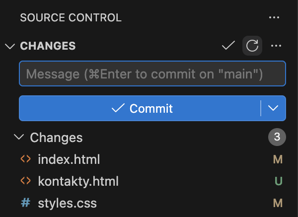
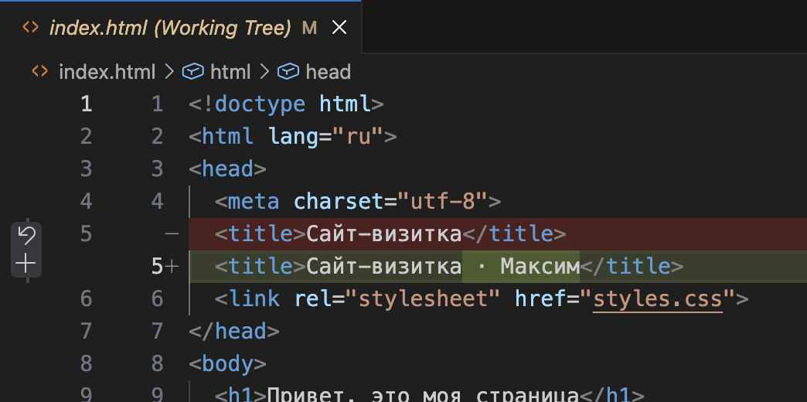
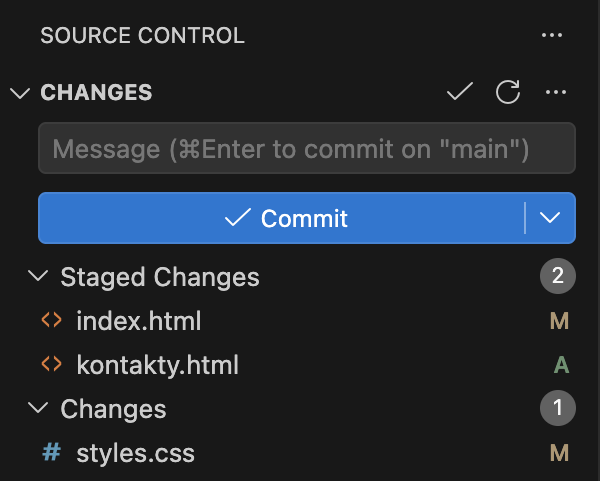
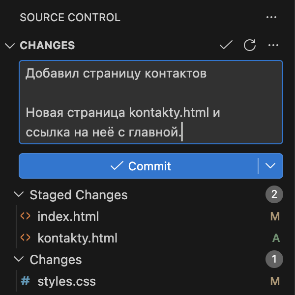
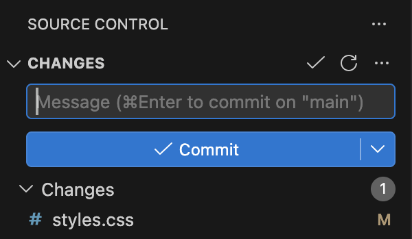
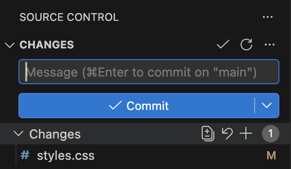
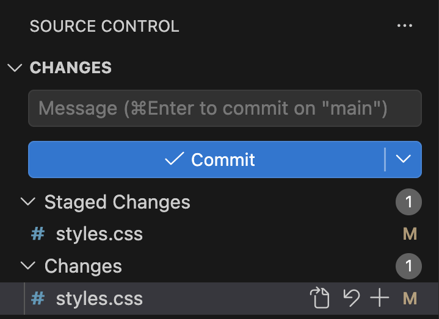

Справочник по Git и GitHub · модуль 2 · первый репозиторий в VS Code
Глава 2.3
Изменения, индекс, коммит:
почему два шага
В главе разобрано, зачем между файлом и коммитом стоит индекс. Четыре правки в трёх файлах раскладываются на два коммита: каждый коммит содержит одну законченную задачу и сообщение из заголовка и пояснения. В конце показано, как отобрать в коммит часть файла.
- Категория
- Основы работы
- Уровень
- Начальный
- Что получится
- Два коммита с понятными сообщениями вместо одной общей свалки
- Сколько занимает
- Около двадцати пяти минут за компьютером
§1Рабочая папка, индекс, история
Правка попадает в историю в два шага и по пути проходит три места: рабочую папку, индекс и историю.
Индекс — среднее место, куда складывают то, что войдёт в следующий коммит. В панели VS Code он называется Staged Changes, в командах Git — index или staging area. Пока коммит не сделан, содержимое индекса можно менять.
Зачем это нужно в работе
- Отдельный коммит на каждую задачу. За один сеанс работы обычно меняются вёрстка, текст и настройки. Если записать всё одним коммитом, отменить одну из этих правок отдельно не получится.
- Готовое сохраняется отдельно от незаконченного. Законченную правку отбирают и коммитят, незаконченная остаётся в папке.
- Проверка перед коммитом. Индекс показывает, что войдёт в коммит. На этом этапе видно случайно отобранный файл с паролем или отладочную строку.
- Понятная история для команды. По списку коммитов коллеги узнают, что менялось в проекте. Сообщение «Добавил страницу контактов» это сообщает, сообщения «правки» и «фикс» — нет.
§2Подготовка: четыре правки в трёх файлах
В главе используется проект sait-vizitka, склонированный в главе 2.2. Если проекта нет, его клонируют заново по адресу из той же главы.
Вносим в проект четыре правки в трёх файлах. Правки относятся к разным задачам, поэтому в историю они уйдут двумя коммитами.
Правки 1 и 2, файл index.html. Меняем заголовок вкладки и добавляем под абзацем ссылку на страницу контактов:
<!doctype html> <html lang="ru"> <head> <meta charset="utf-8"> <title>Сайт-визитка</title> <link rel="stylesheet" href="styles.css"> </head> <body> <h1>Привет, это моя страница</h1> <p>Учусь работать с Git и веду этот сайт как учебный проект.</p> </body> </html>
<!doctype html> <html lang="ru"> <head> <meta charset="utf-8"> <title>Сайт-визитка · Максим</title> <link rel="stylesheet" href="styles.css"> </head> <body> <h1>Привет, это моя страница</h1> <p>Учусь работать с Git и веду этот сайт как учебный проект.</p> <p><a href="kontakty.html">Контакты</a></p> </body> </html>
Правка 3, новый файл kontakty.html. Создаём его в корне проекта. Содержимое — копия главной страницы с заголовком «Контакты» и строкой с почтой:
<!doctype html> <html lang="ru"> <head> <meta charset="utf-8"> <title>Контакты · Сайт-визитка</title> <link rel="stylesheet" href="styles.css"> </head> <body> <h1>Контакты</h1> <p>Почта: student@example.com</p> </body> </html>
Правка 4, файл styles.css. Увеличиваем отступ страницы:
body {
margin: 0;
padding: 40px;
font-family: system-ui, sans-serif;
body {
margin: 0;
padding: 60px;
font-family: system-ui, sans-serif;
Сохраняем каждый файл (CtrlCmd + S) и открываем панель Source Control.
Что получилось.В проекте четыре несохранённые в историю правки в трёх файлах.
§3Шаг 1. Посмотреть список изменений
В разделе Changes три изменённых файла:

kontakty.html.Тот же список печатает команда git status:
git status --short
M index.html
?? kontakty.html
M styles.css
Все три файла находятся в разделе Changes. Индекс пуст, поэтому коммит пока создать нельзя.
Нажимаем на имя index.html, чтобы открыть его изменения:

Что получилось.Известно, какие файлы изменены и что изменилось в index.html.
§4Шаг 2. Разложить правки по смыслу
Число коммитов определяется числом задач, а не числом файлов.
Правки из этой главы относятся к двум задачам:
| Что сделано | Какие файлы затронуты | Это одно дело? |
|---|---|---|
| Появилась страница контактов и ссылка на неё | kontakty.html — новый, index.html — ссылка | Да: страница без ссылки недоступна с главной, ссылка без страницы не работает |
| Заголовок вкладки стал понятнее | index.html | Отдельная небольшая правка в том же файле |
| Увеличены отступы | styles.css | Да, это оформление, оно не связано со страницей контактов |
Получается два коммита: страница контактов со ссылкой и оформление. Заголовок вкладки включаем в первый коммит, потому что он находится в том же файле, что и ссылка.
Ассоциация: две коробки для переезда
При переезде посуду и книги складывают в разные коробки и каждую подписывают. На новом месте нужную коробку находят по подписи.
Плюс у файла кладёт его в коробку — индекс. Commit заклеивает коробку и подписывает её сообщением. Следующие правки складываются уже в новую коробку.
Где не совпадаетКоробка в Git одна: пока первая не заклеена, вторую собрать нельзя. Поэтому коммиты делают по очереди.
Что получилось.Составлен план: первый коммит — страница контактов, ссылка и заголовок вкладки, второй — отступы.
§5Шаг 3. Отобрать первую пару файлов
Наводим курсор на index.html и нажимаем +. Повторяем для kontakty.html. styles.css оставляем в Changes, он войдёт во второй коммит.

index.html и kontakty.html. В Changes остался styles.css.То же в терминале:
git add index.html kontakty.html
У index.html осталась буква M — файл уже был в истории и изменён. У kontakty.html буква сменилась с U на A — новый файл отобран и после коммита будет отслеживаться.
В терминале содержимое индекса печатает git diff --staged, а правки, не отобранные в индекс, — git diff.
Что получилось.index.html и kontakty.html в Staged Changes, styles.css в Changes.
§6Шаг 4. Написать сообщение из двух частей
Щёлкаем в поле Message и пишем первую строку — короткий заголовок: «Добавил страницу контактов». Дважды нажимаем Shift + Enter и пишем пояснение: «Новая страница kontakty.html и ссылка на неё с главной.»

CtrlCmd + Enter в этом поле сразу создаёт коммит. Shift + Enter только переводит строку, поэтому коммит не создастся до того, как дописано пояснение.
Что получилось.В поле Message заголовок и пояснение, разделённые пустой строкой.
§7Шаг 5. Сделать первый коммит и проверить его
Нажимаем ✓ Commit. Два отобранных файла записываются в историю, styles.css остаётся в Changes.

styles.css.То же в терминале. Каждый ключ -m — отдельный абзац сообщения: первый станет заголовком, второй — пояснением.
git commit -m "Добавил страницу контактов" -m "Новая страница kontakty.html и ссылка на неё с главной."
Последний коммит с автором, датой, сообщением и списком файлов печатает команда:
git log -1 --stat
commit 3e4a2c6cec5fd5501bfbcf9d14b11dd308d49cb4
Author: Student <student@example.com>
Date: Wed Sep 23 05:45:56 2026 +0300
Добавил страницу контактов
Новая страница kontakty.html и ссылка на неё с главной.
index.html | 3 ++-
kontakty.html | 12 ++++++++++++
2 files changed, 14 insertions(+), 1 deletion(-)
В коммите записаны полное имя (хеш), автор, дата, сообщение и список файлов с числом добавленных и удалённых строк. Имя и почта автора берутся из настроек Git, заданных в главе 1.3.
Что получилось.В истории коммит «Добавил страницу контактов» с двумя файлами. styles.css остаётся в Changes.
§8Шаг 6. Сделать второй коммит
В разделе Changes остался один файл. Наводим курсор на заголовок раздела, справа появляются значки:

Stage All Changes. Она отбирает все файлы списка сразу. Ею пользуются, когда в списке нет лишних файлов.Нажимаем плюс у заголовка, пишем сообщение «Увеличил отступы страницы» и нажимаем ✓ Commit. Правки записаны двумя коммитами, у каждого своё сообщение.
То же в терминале. Точка после git add означает все изменения в папке проекта:
git add . git commit -m "Увеличил отступы страницы"
git log --oneline -3
9e3c858 Увеличил отступы страницы
3e4a2c6 Добавил страницу контактов
745f2e1 Добавил README с описанием проекта
Если бы все правки ушли одним коммитом, в истории была бы одна строка вроде «Правки по сайту». По такой строке нельзя понять, какой коммит менял отступы.
Что получилось.В истории шесть коммитов: четыре из клона и два ваших. Список изменений пуст.
§9Шаг 7. Подготовить часть файла
Иногда в одном файле оказываются правки к разным задачам. Например, изменён отступ и начат новый блок стилей, а в коммит нужен только отступ. Для этого Git отбирает в индекс отдельный участок файла.
Вносим в styles.css две правки: уменьшаем отступ до 48px и добавляем в конец файла блок для подвала страницы:
body {
margin: 0;
padding: 60px;
font-family: system-ui, sans-serif;
background: #F4F1EC;
color: #1B1A19;
}
h1 {
font-size: 34px;
}
body {
margin: 0;
padding: 48px;
font-family: system-ui, sans-serif;
background: #F4F1EC;
color: #1B1A19;
}
h1 {
font-size: 34px;
}
footer {
color: #6B6560;
}
Сохраняем файл и открываем окно сравнения щелчком по styles.css в панели. Наводим курсор на первый изменённый участок. В поле с номерами строк слева появляются два значка:

footer в конце. Значок + с подсказкой Stage Block отбирает в индекс только первый участок. Круговая стрелка над ним отменяет этот участок.Нажимаем + у первого участка. Файл появляется в обоих разделах:

Индекс хранит свою копию файла отдельно от файла в папке. git status отмечает это двумя буквами:
git status --short
MM styles.css
Первая M — изменение в индексе, вторая — изменение в папке, не отобранное в индекс. Коммит, сделанный сейчас, включил бы только новый отступ, а блок footer остался бы в Changes.
Эти правки в историю не записываем и возвращаем файл к последнему коммиту. Нажимаем − у styles.css в Staged Changes: отобранный участок переходит в Changes. Затем нажимаем круговую стрелку у styles.css в Changes и подтверждаем. Обе правки удаляются, список изменений становится пустым. То же в терминале:
git restore --staged styles.css git restore styles.css
Первая команда убирает файл из индекса, вторая возвращает файл к последнему коммиту. Отмена изменений подробно разобрана в главе 2.6.
Отбор участков нужен, когда в одном файле оказались правки к разным задачам. Если работать над одной задачей за раз и коммитить её по завершении, такие случаи возникают редко.
Что получилось.Показано, как отобрать в коммит часть файла. styles.css возвращён к последнему коммиту, список изменений пуст.
§10Справка: три зоны и команды
В панели и в командах одни и те же действия называются по-разному:
| Действие | В панели VS Code | Команда | Что меняется |
|---|---|---|---|
| Посмотреть, что изменилось | Список Changes | git status | Ничего, только показывает |
| Отобрать файл в коммит | + у файла | git add имя-файла | Файл копируется в индекс |
| Отобрать всё | + у заголовка Changes | git add . | В индекс уходит весь список |
| Вернуть из индекса | − у файла в Staged | git restore --staged имя | Файл убирается из индекса, правки целы |
| Посмотреть, что в индексе | Список Staged Changes | git diff --staged | Ничего, только показывает |
| Записать в историю | ✓ Commit | git commit -m "текст" | Индекс становится новым коммитом |
Команды приведены для сверки с инструкциями, где работа описана через терминал. Кнопки панели выполняют те же действия.
§11Как писать сообщения коммитов
Сообщение коммита читают при поиске нужного изменения в истории. Первая строка сообщает, что изменилось в проекте.
Проверка сообщения перед коммитом
50–70 символов: такая строка целиком видна в списках истории и на GitHub.git log --stat.§12Частые вопросы
§13Проверьте себя
В панели три файла в Changes и ноль в Staged Changes. Что произойдёт по нажатию Commit?
Индекс пуст, поэтому VS Code предложит отобрать все изменения сразу. Если согласиться, в коммит войдут все три файла. Порядок работы: плюс у нужных файлов, сообщение, Commit.
Один и тот же файл оказался и в Staged Changes, и в Changes. Как это возможно?
В индекс отобрана часть правок файла, например один участок кнопкой Stage Block. Остальные правки остались в рабочей папке. В коммит войдёт только отобранное. git status --short показывает такой файл буквами MM.
Вы отобрали файл в индекс, а потом передумали. Как вернуть, не потеряв правки?
Навести курсор на файл в Staged Changes и нажать − (Unstage Changes). Файл вернётся в Changes, текст не изменится. Круговая стрелка рядом стирает правки.
За утро вы поправили вёрстку шапки, исправили опечатку в тексте и добавили новую картинку. Сколько коммитов делать?
Три, по числу задач. Тогда вёрстку шапки можно будет отменить отдельно. При одном общем коммите отмена затронет и опечатку, и картинку.
Чем git diff отличается от git diff --staged?
Первая показывает правки, не отобранные в индекс, — раздел Changes. Вторая показывает содержимое индекса — раздел Staged Changes, то есть следующий коммит.
Почему в сообщении коммита первую строку делают короткой?
Первую строку показывают списки истории: раздел Graph, вывод git log --oneline, страница коммитов на GitHub. Длинная строка в них обрезается. Подробности пишут после пустой строки.
§14Шпаргалка по главе
рабочая папка — Changes
индекс — Staged Changes
история — коммиты
+ у файла — один файл
+ у заголовка — все
Stage Block — участок
− у файла в Staged
правки при этом целы
короткая первая строка
Shift+Enter — перенос
пояснение после пустой строки
git status --short
git diff — не отобрано
git diff --staged — в индексе
git log -1 --stat
git log --oneline
Итог главы
Между рабочей папкой и историей находится индекс — раздел Staged Changes. Плюс отбирает правки в индекс, Commit записывает содержимое индекса в историю. Индекс позволяет разделить правки по задачам: в главе четыре правки записаны двумя коммитами. Отбирают файл целиком, все файлы списка или отдельный участок файла; в последнем случае файл находится в обоих разделах. Сообщение коммита состоит из короткого заголовка и пояснения после пустой строки. В следующей главе разобрано, как читать историю, искать нужный коммит и узнавать автора строки.
- Кадры и ответы команд получены на клоне проекта sait-vizitka в Git версии 2.51.1.
- Работа разделов Changes и Staged Changes, кнопка Stage Block — документация VS Code, раздел Source Control.
- Назначение индекса и команд
git add,git restore,git commit— документация git-add и git-commit.